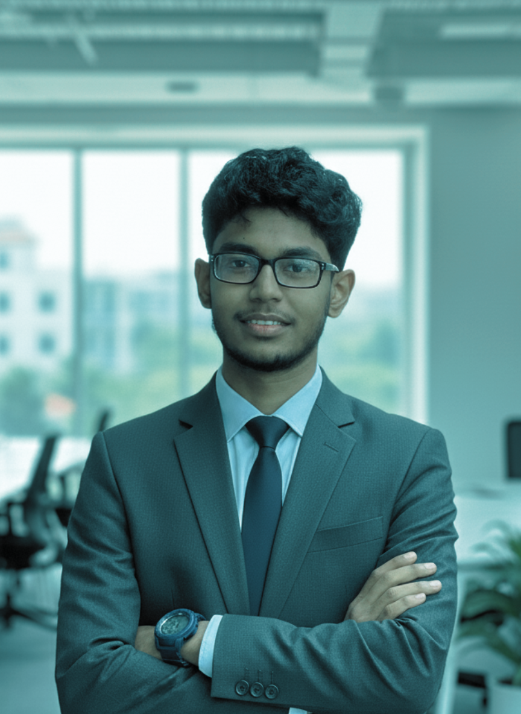

Name: Samindra Herath
Student Number: CT/2022/058
Degree Program: Bachelor of Information and Communication Technology (BICT)
Faculty: Faculty of Computing and Technology
University: University of Kelaniya
Tagline: Aspiring Network & Cybersecurity Engineer | Tech & Audio Enthusiast
Short Bio: I am a twenty-one year old undergraduate living in Kandy, Sri Lanka, where I am constantly exploring the dynamic world of technology. I am endlessly fascinated by the architecture of digital networks and fiercely driven to protect them from modern cyber threats. However, my life is not just about code and cybersecurity. As the Head of Music for the FCT Music Band, my creative side is equally important. I absolutely love audio engineering and playing instruments, especially the guitar and drums. To balance everything out, you will also frequently find me training hard with the university Taekwondo team every week.
Educational Background:
My academic journey started at Nugawela Central College, where I completed my A/L exams. Currently, I am in my second year of the BICT program at the University of Kelaniya's Faculty of Computing and Technology, focusing heavily on Network Security.So far, my degree has been an incredible deep dive into the architecture of digital systems.
My Interests:
Career Goals:
I want to build a career as a Network Security Architect, helping organizations protect their digital information while finding creative solutions to difficult technical problems.
Course/Module:GTEC 23032 Project in Technology
My Role: Lead Developer and Architect
Tools Used: Python, Software-Defined Networking, Linux, Ollama , Docker , Mininet.
Description: I led the development of an intelligent cybersecurity defense network. A "honeypot" is essentially a digital trap used to lure and study hackers. Traditionally, these traps are isolated—an SSH trap has no idea if the Web server is also under attack.Over a 5-month timeline, we fixed this by building a centralized "Brain" in Python that connects SSH, Web, and FTP traps. We deployed the infrastructure using Mininet and Docker, used Redis to give the system cross-protocol memory, and integrated Llama 3 to analyze attacker intent. When a threat is confirmed, a Ryu SDN controller automatically blocks the attacker on the network.
Course/Module: GTEC 13032 Projects In Technology
My Role: Technical Lead
Tools Used: Python , Open CV , Arduino, C# ,JAVA
Description: Our final product was to developed a smart wearable wristband designed to continuously monitor critical vital signs, including heart rate, blood pressure, and blood oxygen levels. Then we feed it in real time into a custom AI model trained to recognize the early warning signs of a heart attack. If the system predicts an imminent cardiac event, it automatically sends an alert to nearby hospitals and emergency medical services.
Course/Module: External project for university research and publication division
My Role: BA & QA
Tools Used: Jira , Mira , Bizagi ,Tail scale
Description: Built by FCT Technologies, RGMS is a centralized management platform designed to organize data and streamline administrative tasks. We built it to replace scattered manual processes with a single, unified hub. The system features a secure database, an intuitive user interface, and automated workflow tracking, giving teams a practical and straightforward tool to manage their day to day operations efficiently.
Course/Module: GTEC 12033 - Fundamental Practices in Technology
My Role: Structural Designer & QA
Tools Used: Blender
Description: An affordable, mechanical prosthetic hand prototype designed using sustainable cardboard.I was responsible for defining the requirements for hand mobility and conducting usability testing on the mechanical linkages to ensure a reliable grip for users.
Course/Module: GTEC 21023 - Fundamentals of Electronics
My Role:Researcher
Tools Used: EasyEDA , Perplexity , KiCad , fritzing
Description: The robot navigates by using IR sensors to spot the contrast between a black line and a white surface.And L293D motor driver, which manages two DC motors for steering. This setup relies entirely on analog components, meaning it functions without a microcontroller or any programming
Programming Languages
Networking & Security
Engineering / Hardware Skills
Industry Exposure:
I was selected for a Business Analyst (BA) and Network Administrator (NA) position for an external university project handling by FCT Technologies, which taught me how to communicate technical ideas to business teams. And network essential when dealing with application hosting and maintaining
Clubs & Leadership:
> System Log: Tracking academic exposure and knowledge acquisition beyond standard parameters...
Type: Student Research Symposium
Organizer: Faculty of Computing and Technology, University of Kelaniya
Date: October 2025
Role: Participant
Key Learnings:
Type: Technical Workshop
Organizer: FOSS Community
Date: December 2025
Role: Participant
Key Learnings:
Type: Technical Workshop
Organizer: FOSS Community
Date: February 2026
Role: Participant
Key Learnings:
> System Log: Verifying external credentials, specialized training, and skill augmentations...
Developing the RGMS platform with FCT Technologies has been a vital part of my university experience, especially in understanding theoretical software life cycles through practical application. Working as both a Business Analyst and Quality Assurance specialist allowed me to gain significant hands-on experience with requirement gathering and system testing.
Through these activities, I learned how to translate complex business needs into technical specifications and follow proper procedures for software validation. I also developed a better understanding of technical accuracy and how to maintain high standards of reliability throughout the development process.
One challenge I faced was discovering requirement gaps regarding resource tracking mid-way through the project. While managing these missing requirements was initially complex, I learned that proactive thinking and thorough initial analysis are essential for maintaining a project's momentum and avoiding frustration.
Serving as the Organizing Committee Vice President (OCVP) for Marketing during the Winter Induction was a transformative period in my AIESEC career. This role required me to bridge the gap between creative outreach strategies and the operational needs of a large-scale event.
Through this experience, I learned how to handle the complexities of marketing management while maintaining a strict timeline. Most importantly, I gained significant confidence by leading a team through challenges and seeing the direct impact of our campaigns on the induction's success.
Managing my university academic life alongside my commitment to Taekwondo has been a defining part of my undergraduate experience. As a BICT student at FCT. I have had to balance a demanding technical degree with the physical intensity of sports. Being selected for the SLUG 2025 team was a significant milestone that required me to apply the same level of dedication to my training as I do to my studies.
Through these activities, I learned that the discipline required on the mat is remarkably similar to the technical accuracy needed in my field. I developed a much better understanding of how to prioritize my time and energy to maintain high performance in both areas. This experience reinforced the idea that success in complex technical environments often depends on the resilience and mental focus built through consistent practice.
One significant challenge I faced was managing the physical exhaustion and competition pressure that came with preparing for a major inter university tournament. It was often difficult to maintain the mental stamina required for complex coding and assignments after hours of intense training sessions. However, navigating these hurdles helped me develop critical thinking, as I had to look ahead at my academic deadlines and plan my rest and study periods much more strategically.
To address these challenges, I implemented a structured daily routine that prioritized recovery and focused study blocks. In the future, I aim to continue refining my time management skills and use the proactive mindset I've gained to handle high-pressure situations in my professional career more efficiently.
Short-Term Goals:
Long-Term Goals:
Skills to be Developed:
Get in Touch:
End of E-Portfolio.